个人会用 AI Coding，为什么团队还是用不好？
很多团队第一次看到 AI Coding 的效果，往往来自某个研发同学的个人实践：他把需求贴给模型，让模型帮忙读代码、生成实现、补测试，再自己做几轮修正，最后确实比过去快。这个过程很容易让团队产生一个判断：既然个人已经能提效，那接下来只要多推广工具、多沉淀 Prompt、多做几个 Agent，团队效率自然会起来。
真实情况通常没这么顺。个人会用 AI Coding，依赖的是个人对业务、代码、测试和风险的综合判断。这个人知道哪些上下文该给，知道模型哪里容易胡说，也知道测试失败是不是历史问题。换一个人、换一个应用、换一个需求规模，结果就会波动。团队真正要解决的，不是“让模型更聪明一点”，而是把个人临场判断里可工程化的部分固定下来。
团队 AI Coding 的关键转折点，是从“会用工具”走向“有工程系统承接工具”。需求从哪里来、PRD 是否确认、规则放在哪里、上下文如何选择、设计和计划怎么审查、验证证据如何记录、历史经验怎么沉淀，这些问题如果都靠人临场补救，AI Coding 就只能停留在个人经验层。
这个系列把这类系统称为 团队 AI Coding 工程化框架。它不是某个具体产品名，而是一组工程边界：共享运行时、任务状态、稳定产物、规则体系、有界上下文、复杂需求拆分、验证证据、资产沉淀和协作审查。下面用一个通用的实践样本来拆解这些边界如何落到目录、命令、产物和数据结构里。
一句话结论：AI Coding 的团队化问题，不是 Prompt 问题，而是工程系统问题。
一、一个典型场景：个人能跑通，团队接不住
假设一个业务团队要做“新增奖品权益类型”。熟悉该应用的研发 A 用 AI Coding 很顺：
- 他知道 PRD 里“权益类型”和代码里的
PrizeType不是完全一一对应。 - 他知道新增类型不能只改枚举，还要看配置生成、查询展示、回滚兼容。
- 他知道历史测试里有一个用例长期失败，本次不用被它阻塞。
- 他知道哪个 Service 是主入口，哪些 Controller 只是薄封装。
所以他能把上下文裁剪得很准，模型输出也容易被他修正。但如果把同一个需求交给研发 B，或者交给另一个应用团队，问题就会出现：
- B 不知道要补哪些业务规则，只能把整篇 PRD 和一堆代码塞给模型。
- 模型生成的方案看起来完整，但没有说明哪些存量行为不能变。
- 计划按 Controller、Service、DAO 拆任务，看起来很工程化，但没有对应业务验收。
- 测试失败后，模型说“可能是历史失败”，但没有改前 baseline 证据。
- 需求完成后，关键经验只留在聊天记录和 PR 评论里，下次还要重新解释。
这不是某个人不会用 AI，而是团队缺少一个承接层。个人经验里有很多可以系统化的东西：规则可以结构化，需求可以切片，上下文可以选择，验证可以留证据，交付可以归档。团队 AI Coding 的建设重点，就是把这些东西从个人脑子里拿出来，变成团队共享的工程资产。
常见误区
团队推进 AI Coding 时，常见误区有五类。
| 误区 | 短期看起来 | 长期问题 |
|---|---|---|
| 每个应用各写一套 Agent | 贴近业务，启动快 | 通用流程重复建设，行为不一致，维护成本随应用数线性上升 |
| 规则全部塞进 Prompt | Agent 初期效果明显 | Prompt 越来越长，规则过期无人发现，无法审查来源 |
| 直接让 AI 改代码 | 交互简单 | 缺少 PRD、设计、计划和验证边界，大 diff 难评审 |
| 上下文越多越好 | AI 看起来知道更多 | 无关信息淹没关键约束，成本上升，输出不稳定 |
| 测试失败靠口头解释 | 进度不被阻塞 | 分不清历史失败和本次回归，质量判断不可审计 |
这些误区背后是同一个问题：团队没有把 AI Coding 纳入工程系统，而是把它当成一个更强的聊天窗口。
一个更容易传播的判断
团队内部讨论 AI Coding 时，可以先用下面这张表判断问题到底出在哪里。
| 现象 | 表面问题 | 真正缺的工程能力 |
|---|---|---|
| 某个同学用得很好，其他人复现不了 | 个人能力差异 | 规则、上下文和验证经验没有资产化 |
| Agent 每次都要重新解释业务背景 | Prompt 不够长 | 没有可路由的团队规则和应用规则 |
| 大需求一交给 AI 就变成大 diff | 模型执行太散 | 没有需求切片、阶段产物和 task contract |
| 测试失败后没人敢信 AI 的解释 | 模型判断不可靠 | 没有改前 baseline 和验证 ledger |
| 换工具后历史任务接不上 | 工具割裂 | 任务状态和产物没有放在共享运行时 |
| 交付结束后经验没有复用 | 知识库没人维护 | 缺少 summary、规则处置和 archive recall |
这个判断比“要不要多写几个 Agent”更重要。团队化落地的关键，不是 Agent 数量，而是这些工程能力是否形成闭环。
二、团队 AI Coding 要补的八类能力
从个人使用走到团队使用，至少要补齐八类能力。
| 能力 | 解决的问题 | 工程边界 |
|---|---|---|
| 共享运行时 | 避免每个应用重复建设 Agent | 统一任务状态、工具、产物、上下文目录 |
| 状态真相源 | 避免任务依赖聊天上下文 | 当前任务指针、任务 JSON、阶段状态 |
| 稳定阶段产物 | 让交付过程可审查 | PRD、设计、计划、总结、验证证据 |
| 规则体系 | 避免 Prompt 人工维护失控 | Team SPEC、App SPEC、route page、focused Spec |
| 有界上下文 | 避免全仓扫描和信息过载 | PRD working set、code working set、selected rules |
| 复杂需求拆分 | 避免大 PRD 直接变成大 diff | 功能切片、需求契约、必要时分片交付 |
| 验证治理 | 避免测试失败靠口头判断 | 改前 baseline、改后验证、失败分类、ledger |
| 资产沉淀 | 让每次交付反哺下一次任务 | summary、Spec update、archive recall、research artifact |
这些能力不是一次性做全的平台功能，而是一套可以逐步建设的工程边界。先把状态、产物、规则、验证这几件事固化下来，团队 AI Coding 才有持续演进的基础。
这里有一个很实用的顺序：先解决“人能不能接手”，再解决“AI 能不能自动”。如果一个任务换人之后连当前状态、需求、设计、计划和验证证据都找不到，过早做自动化只会把不可控流程跑得更快。
三、一个工程化框架的整体结构
团队 AI Coding 工程化框架的核心做法，是把 AI Coding 组织成一套项目内共享运行时。运行时承接通用流程，应用差异进入应用规则和历史案例，不同 AI 工具通过适配层接入。

对应到目录，一个通用实践样本可以这样组织：
.team-agent/
├── .current-task
├── config.json
├── workflow/
│ └── phase-contracts.json
├── tools/
│ ├── task.js
│ ├── build-prd.js
│ ├── prd-context.js
│ ├── code-index.js
│ ├── context-selection.js
│ └── spec-context.js
├── spec/
│ ├── team/
│ └── app/
├── code-index/
│ └── index.json
└── tasks/
├── {taskId}/
│ ├── task.json
│ ├── prd.md
│ ├── design.md
│ ├── plan.md
│ ├── plan.tasks.json
│ ├── summary.md
│ ├── generated/context/
│ ├── evidence/verification-ledger.jsonl
│ └── context/archive-recall.json
└── archive/
└── index.jsonl
这套结构里有几个关键分工：
.current-task和task.json承接任务状态。prd.md、design.md、plan.md、summary.md是稳定阶段产物。generated/context/*.jsonl是可重建上下文，不是新的状态真相源。spec/**承接团队和应用规则。evidence/verification-ledger.jsonl承接验证证据。archive/index.jsonl承接已完成任务的历史案例索引。
这些名字都不是重点。重点是把“状态、产物、规则、上下文、证据、归档”分开。只要边界清楚，目录名可以换成 .ai-agent/、.coding-agent/ 或团队自己的平台目录。
这套框架背后的几个理论关键词
这套体系不是凭空设计出来的，它背后其实是几条很朴素的软件工程原则。
| 理论关键词 | 在 AI Coding 团队化里的含义 | 落地动作 |
|---|---|---|
| Single Source of Truth | 任务状态不能散落在聊天、脚本和 UI 里 | 用 task.json 和当前任务指针承接状态 |
| Bounded Context | Agent 每次只消费当前阶段必要证据 | 用 PRD 切片、规则选择、代码 working set 控制上下文 |
| Artifact-first | 关键判断不能只存在聊天里 | PRD、设计、计划、总结先落文档再确认 |
| Evidence-based Review | 质量判断要基于证据链 | 改前 baseline、改后验证、ledger 和 staged diff review |
| Control Plane / Execution Plane | 调度和执行不能混在一个万能 Agent 里 | 控制面推进流程，worker 执行单个 task |
这些词听起来像架构概念，但落到团队里就是很具体的问题：任务从哪里恢复、规则从哪里读、失败怎么分类、谁有权推进下一阶段。
四、状态真相源：任务不能依赖聊天记忆
个人使用 AI Coding 时，经常靠当前聊天窗口维持上下文。团队场景里，这很危险：会话断了、工具换了、人换了，任务就很难恢复。
一个最小 task.json 可以长这样：
{
"taskId": "REQ-123456",
"workflowKind": "feature",
"currentStepId": "tech_design",
"status": "in_progress",
"branch": "feature/prize-type",
"artifacts": {
"prd": "prd.md",
"design": "design.md",
"plan": "plan.md",
"summary": "summary.md"
},
"meta": {
"contextMode": "expanded",
"contextRisks": ["large_prd", "multi_domain"]
}
}
这个 JSON 不需要承载所有过程细节，它只保存任务恢复和流程推进必须知道的事实。上下文选择、代码索引、验证证据这类可重建或可追加的信息，应放在自己的产物里，不要都塞回任务状态。
一个健康的状态模型要满足三个要求：
- 可恢复：换一个会话，能知道当前任务是谁、走到哪一步、下一步该读哪些产物。
- 可审查：任务状态里不能混入大量模型总结，关键事实要能追溯到具体 artifact。
- 可清理：任务归档后，active task 指针要清掉，临时诊断文件不能变成长期状态。
一个不健康的状态模型通常长这样：task.json 里塞满模型总结、测试日志、候选代码、历史案例和临时判断。短期看信息很全，长期看没人知道哪个字段是事实、哪个字段是缓存、哪个字段已经过期。团队要尽早建立“状态只放状态，证据放证据，缓存可重建”的习惯。
从聊天驱动到产物驱动
个人使用 AI Coding 时，常见交互是：“帮我看下这个需求”“帮我实现一下”“测试失败你看下”。这种方式对熟悉上下文的人有效，但团队协作时很难交接和审查。
团队级流程需要把关键节点产物化：

这个流程并不是为了增加仪式感，而是为了回答团队协作中的具体问题：
- 需求是否被确认过？
- 技术方案是否能被负责人审查？
- 开发计划是否拆到可执行 task？
- 每个 task 是否有验证命令和通过证据？
- 失败测试是否是历史问题？
- 这次交付有没有形成后续可用的规则或案例？
如果这些问题都只能从聊天记录里找答案，AI Coding 很难成为团队能力。
什么叫“足够干”的最小标准
如果一篇实践文章读完，团队只能得到“要重视上下文”“要做好验证”这类原则，它还不够。真正能落地的内容至少要能回答下面几个问题：
| 问题 | 文章里应该给出的东西 |
|---|---|
| 我从哪里开始建？ | 最小目录和文件职责 |
| 我怎么判断做对了？ | 检查清单和阻塞条件 |
| 我怎么避免做重？ | 先后顺序和低配版路径 |
| 我怎么说服团队？ | 真实失控场景和可讨论问题 |
| 我怎么持续演进？ | 交付后规则和案例沉淀机制 |
这个系列后面的每一篇都会围绕这些具体答案展开，而不是停留在“理念正确”。
一个需求在框架里怎么流转
以“新增奖品权益类型”为例，完整流转可以拆成七个阶段。
| 阶段 | 输入 | 输出 | 人需要关注什么 |
|---|---|---|---|
| 需求结构化 | 工单、Wiki、人工 PRD | prd.md、prd/index.json、prd/feature-*.md |
需求范围是否清楚，功能点是否漏拆 |
| 规则选择 | PRD 切片、SPEC route page | selected SPEC refs | 是否命中业务规则，是否有设计前必须确认的问题 |
| 技术设计 | PRD、规则、代码 working set | design.md |
方案是否覆盖核心链路、兼容、数据、稳定性 |
| 开发计划 | design.md、代码引用 |
plan.md、plan.tasks.json |
task 是否可执行，是否有验证命令和验收标准 |
| 任务开发 | 单个 task、allowed paths | staged diff、验证记录 | diff 是否只覆盖当前 task，是否满足验收 |
| 交付总结 | diff、验证证据、计划完成情况 | summary.md |
这次改动的边界、风险和后续事项 |
| 资产沉淀 | summary、历史问题、规则变化 | SPEC 更新、archive index | 哪些经验下次还要用 |
这套流转的目的不是让 AI 每一步都自动化，而是让人和 AI 围绕同一批产物协作。AI 负责生成、搜索、初步修改和整理，人负责关键判断、边界确认和风险兜底。
五、低配版也能先跑起来
很多团队会担心：如果要做 code-index、selector、archive recall、workspace，听起来是不是太重。实际落地时可以从低配版开始。
.team-agent/
├── current-task
├── spec/
│ ├── team/
│ └── app/
├── tasks/
│ └── {taskId}/
│ ├── task.json
│ ├── prd.md
│ ├── design.md
│ ├── plan.md
│ ├── plan.tasks.json
│ ├── summary.md
│ ├── context/
│ └── evidence/
└── archive/
└── index.jsonl
第一阶段只要求做到：
- 每个 AI Coding 任务都有任务目录。
- 需求、设计、计划、总结落成 Markdown。
- 团队规则和应用规则不要写死在 Prompt 中。
- 每个 task 都记录验证命令和结果。
- 交付结束后判断是否需要更新规则或归档案例。
这五件事做好后，再考虑自动选择上下文、自动召回历史案例、多工具适配和协作工作台。不要一开始就把系统做成大平台，否则团队还没有形成稳定习惯，维护成本已经先上来了。
建设顺序建议
一个比较稳的建设顺序是：
- 先产物化：固定
prd.md、design.md、plan.md、summary.md，让团队从聊天驱动切到产物驱动。 - 再规则化：把 Prompt 里的长期规则拆到
spec/team和spec/app，建立 route page 和 focused Spec。 - 再上下文化：让 PRD 切片、SPEC、代码引用和历史案例进入 working set，而不是全量塞给模型。
- 再证据化：建立改前 baseline、改后验证、失败分类和 ledger。
- 最后协作化：当产物和证据稳定后，再做 Feature Room、Review Request、指标看板等协作面。
这条路径的好处是每一步都有独立收益。即使团队暂时没有做复杂 Agent 编排，只要先把产物、规则和验证固定下来，AI Coding 的稳定性就会明显提升。
六、自查清单
可以用下面的问题判断团队是否还停留在个人使用阶段：
- 换一个人能否继续同一个 AI Coding 任务？
- 需求、设计、计划、验证证据是否有稳定文件？
- 应用规则是否主要写在 Prompt 或聊天模板里？
- 相似需求的历史经验能否被后续任务重新找到？
- AI 修改代码前是否知道当前测试 baseline？
- 一个大需求是否会先拆成功能点边界？
- 负责人审查的是 artifact 和 diff，还是只能看聊天记录？
- 更换 AI 工具时，任务状态和产物是否还能保留？
如果多数答案是否定的，优先建设共享运行时、SPEC 体系和阶段产物，而不是继续增加单点 Agent 数量。
七、思考与实践
- 你们团队现在 AI Coding 最大的问题，是个人经验难复用、规则难维护、上下文失控，还是验证不清？
- 如果让另一个同事明天接手你当前的 AI Coding 任务，他需要哪些文件才能继续？
- 你们团队最应该先补的是任务状态、规则体系、上下文工程，还是验证证据？欢迎带着具体场景讨论。
八、结尾
团队 AI Coding 的核心挑战，不是让每个人都学会更复杂的提示词，而是让团队有一套稳定工程系统承接 AI 的输入、输出和沉淀。
个人提效靠技巧，团队稳定靠系统。下一篇进入共享运行时：为什么不要让每个应用都重复建设 Agent，以及团队最小任务目录应该如何承接状态、产物和验证证据。